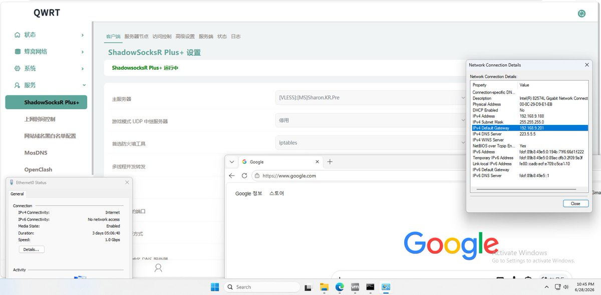

想问下大家用OpenWrt是会用到哪些功能？我总结了两种模式：
A 作为lan侧的一台单臂路由，需要客户端设置其为网关，OP寄了网就断了
B 作为主路由的上级路由，即端口分流流量到该透明路由，无需改动客户端网关
这个项目有个好处，就是能与某OS共用内核，甚至是对这个魔改过的Linux内核深度适配底层组件，因此只占5-30M内存。同时想问，除iStoreOS、QWRT外你还用过哪些OP，特点是？
如果能上架，用户就不需要再去虚拟机里创建、导镜像和复杂配网了，这套黄金组合能更高效、更省事。我希望在前期应用生态不全的情况下满足用户需求，同时按需求去适配原生应用，争取最大化符合使用场景
A 作为lan侧的一台单臂路由，需要客户端设置其为网关，OP寄了网就断了
B 作为主路由的上级路由，即端口分流流量到该透明路由，无需改动客户端网关
这个项目有个好处，就是能与某OS共用内核，甚至是对这个魔改过的Linux内核深度适配底层组件，因此只占5-30M内存。同时想问，除iStoreOS、QWRT外你还用过哪些OP，特点是？
如果能上架，用户就不需要再去虚拟机里创建、导镜像和复杂配网了，这套黄金组合能更高效、更省事。我希望在前期应用生态不全的情况下满足用户需求，同时按需求去适配原生应用，争取最大化符合使用场景
